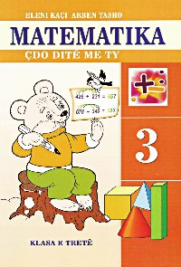

Vazhdon seria e Nikolasit të vogël: Kësaj radhe në fokus janë pushimet.
Me aventurat e tij gjatë pushimeve veorre do të zbaviteni dhe do të
shkriheni përsëri...
Tregime të moçme shqiptare
650 DEN
Një kryevepër e magjisë popullore shqiptare që vjen në filitrin
rrëfimtar të Mitrush Kutelit: Një nga librat më të shitur të dy dekadave
të fundit; një rekomandim i përhershëm për fëmijët dhe një zgjidhje
briliante për të kuptuar ashtin e fantazisë shqiptare.
Pushimet e Çufos
450 DEN
Leximi i “Çufoja dhe bubi Kaçurrel”, “Çufoja në shtëpinë e çudirave”,
“Filmi i gjeneral Çufos” dhe “Pushimet e Çufos” ka bërë që ky personazh
të mbijetojë dhe të bëjë prapësira për afro tre dekada. Por, besoj se
shumëkush do ta shijojë edhe pjesën e aventurave të personazhit tonë aq
të dashur gjatë pushimeve verore.
Aventurat e Tom Sojerit
700 DEN
Është shumë e vështirë që të gjesh një fëmijë që të ketë kaluar moshën e
fëmijërisë pa Tom Sojerin. Nëse je prind, këtë libër duhet ta lexosh
edhe vetë, por duhet t’ia rekomandosh së pari fëmijës tënd…. Ç’pret!
Ditari i Gregut 9 – Çomeni ne shtepi
850 DEN
Një udhëtim me familjen, mendohet si një ngjarje shumë dëfryese…..me
përjashtim të rastit kur je me Heflet. Ky libër është një bombë për
lexuesit ngurrues dhe këdo që kërkon një libër për të qeshur pa fund..!
Vendi i rrefenjave
600 DEN
Libri i tretë i serisë së shumëshitur “Vendi i Rrëfenjave” i vë binjakët
në sprovë, ndërsa ata bëjnë bashkë të dyja botët!
Agjencia Prindërore
550 DEN
Eja në agjencinë tonë dhe zgjidh mamin dhe babin e përkryer. Ky është
ndër librat më të suksesshëm në Britaninë e Madhe që tashmë vjen edhe
para lexuesve të vegjël shqiptarë: Ju garantojmë se ky libër do të
ndikojë për mirë në harmoninë dhe lumturinë e familjes tuaj. Dhe, a e
dini se pse?!!
Konradi
650 DEN
“Konradi – ose djali konservës” i shkrimtares austriake Christine
Nöstlinger është një sukses botëror i jashtëzakonshëm, i përkthyer në më
shumë se 20 gjuhë, tanimë vjen edhe në shqip, për të na rrëfyer
historinë e një djali të dorëzuar gabimisht te dikush, që nuk dëshiron
ta kthejë më mbrapsht. Ky libës konsiderohet si një leksion i shkëlqyer
për mënyrën sesi prindërojmë dhe për raportet e fëmijës me prindërit.
Burri që donte të vdiste...
500 DEN
Në këtë libër të ri "Burri që donte të vdiste..." të shkrimtarit Luan
Rama, përveç romanit me të njëjtin tituli, i janë bashkangjitur edhe
pesë tregime të shkurtra që hedhin dritë mbi drama të mëdha të shoqërisë
shqiptare ndër vite. Një lloj tragjizmi ku në fund nuk mungon përpjekja
për ta ndryshuar këtë botë përpëlitëse si dhe drita për një të ardhme
ndryshe...
Zhdukja e Jozef Mengelesë
800 DEN
Jozef Mengele (Engjëlli i Vdekjes), ish-torturuesi i Aushvicit, më 1949
mbërrin në Argjentinë. I fshehur pas pseudonimeve të ndryshme, ai beson
se mund rë krijojë një jetë të re në Buenos-Ajres. Për tri dekada me
radhë, ai jetoi i qetë në Amerikën ejugut, ndonëse kishte kryer
eksperimente nga më të tmerrshmet mbi të burgosurit e Aushvicit. Ai
kishte aftësinë të ishte gjithnjë disa hapa para agjentëve të Mosadit,
policisë ndërkombëtare dhe gazetarëve nga mbarë bota... Në këtë roman të
bazuar në hulumtime rogoroze pothuajse tërësisht në dokumentet
historike, Olivier Guez ndjek gjurmët e Mengelesë gjatë viteve të
largimit të tij nga Europa. Zhdukja e Jozef Mengelesë e vë lexuesin në
një kërkim lëtrar në gjurmët e një prej figurave më të pahijshmë dhe
kriminale të shekullit të njëzetë.
Përtej
450 DEN
Romani i Natsuo Kirino "Përtej" tregon një histori rrëqethëse krimi në
periferi të Tokios. Katër gra punojnë në turnin e natës në një fabrikë
ku përgatiten dhe paketohen ushqime të gatshme. Të ngarkuara deri në fyt
me punë dhe me borxhe, të izoluara nga bashkëshortët dhe fërnijët, të
gjitha ëndërrojnë të gjejnë një zgjidhje në jetën e tyre pa rrugëdalje.
Një nënë e re në kulmin e dëshpërimit vret bashkëshortin e saj imoral
dhe kumarxhi dhe i rrëfen krimin njërës prej kolegeve të saj, Masako
Katorit. Masako e ndihmon shoqen e saj duke kërkuar ndihmën e shoqeve të
tjera që të copëtojnë trupin dhe të zhdukin provat pa lënë asnjë gjurmë
të viktimës. Kur policia zbulon disa pjesë të trupit, problemet
ndërlikohen edhe më shumë. Katërgratë, bashkëpunëtore në krim, përveç
policisë duhet të shqetësohen edhe për një fajdexhi që ka lidhje me
jakuzan, i cili pasi zbulon sekretin e tyre do ta përdorë për përfitimet
e veta. Romani merr një kthesë të papritur tensionuese kur katër gratë
vihen në shënjestren e pamëshirshme të pronarit të një klubi nate, të
cilit policia i ka ngarkuar krimin. Për shkaktë tyre ai ka humbur
gjithçka dhe tani është i etur për hakmarrje. "Përtej" është një
thriller psikologjik që zbulon skutat më të errëta të shpirtit njerëzor,
një përkujtues turbullues që dëshira e dëshpëruar për liri mund të bëjë
edhe njeriun më të zakonshëm të bëjë të paimagjinueshmen. Natsuo Kirino,
e quajtur ndryshe si "mbretëresha e romaneve të krimit japonez" zotëron
me mjeshtëri humorin e zi në këtë narratim gozhdues por edhe kompleks, e
cila kombinon një vështrim bindës në botën e hikshme të jakuzës me një
portretizim të shkëlqyer të psikologjisë së krimit të dhunshëm.
Pas xhamit të dyfishtë
750 DEN
Nga dritaret me xham të dyfishtë të apartamentit të saj në Reikjavik,
një grua e moshuar vështron jetën nga e cila tanimë ndihet e
përjashtuar. Një jetë e vrullshme dhe e zhurmshme, që vazhdon ta
tërheqë, të ngrejë pyetje e t'i ushqejë urinë për të tjera elite, si dhe
dëshirën e saj për të qenë pjesë e së tashmes. Ajo është e ve, ka fëmijë
që e duan, por që prej kohësh ndjekin jetën e tyre, ka nipër të rritur,
tashmë të largët. Monotonia e ditëve të saj thyhet kur hyn në skenë një
burrë, i cili, pa drojë, e miklon dhe e kërkon, duke e bërë të ndiejë
edhe një herë dalldinë e dëshirimit dhe të përkrahjes. Por, a është e
pranueshme, e dëshirueshme apo edhe e mundur, tekefundit, të dashurohesh
në moshën e saj? Çfarë mund t'u ofrojë dashuria dy jetëve vetmitare në
zgrip të tyre? Pse pasioni i të moshuarve mbetet tabu, edhe në sytë e
miqve dhe të familjarëve, diçka që duhet mohuar ose kritikuar si një
tekë? "Pas xhamit të dyfishtë" është një këngë dashurie delikate për
gjallërinë e shpirtit, që nuk i bindet vyshkjes së trupit, një rrëfim
poetik e i ndjeshëm për largësinë e panevojshme që krijohet mes brezave,
si dhe thekson se ndjenjat nuk plaken kurrë. Është një histori e vjetër,
një burrë takon një grua. Vetëm kaq dimë të bejmë? [...] Sigurisht, nuk
kishte dëshirë t'i kthehej rinisë. E ka kuptuar çfarë duan të gjithë,
pasi kapërcehet gjysma ejetës. Është e rëndësishme të hiqesh sikurje
aty, i pranishëm, qoftë edhe me përpjekje mbinjerëzore. Të qeshurat
duhet ta gënjejnë vdekjen... dhe vdekja me mefshtësinë e saj mendon:
pritpak, këtu nuk ka vend për mua... këtu janë të gjithë shend e verë.
Kafe e hidhur
600 DEN
Sytë e mëdhenj dhe të thellë në formë bajameje, fytyra me tipare të
rregullta, flokët e dendur ngjyrëgështenjë: bukuria e Marisë është nga
ato që e magjepsin atë që hedh sytë mbi të, pikërisht ashtu siç i ndodhi
Pietro Sales - që bië në dashuri me të me shikim të parë dhe kërkon
dorën e saj pa pyetur për pajën - dhe, në mënyrë më pak të dukshme,
mikut Xhozue, që është rritur nga babai i saj, dhe që Maria e konsideron
një farë vëllai të madh. Maria është vetëm pesëmbëdhjetë vjeçe, Pietroja
tridhjetë e katër; ai është një qejfli i pasur të cilit i pëlqejnë
udhëtimet, bixhozi dhe femrat; ajo rrjedh nga një familje socialiste me
ideale të mëdha por me mjete të kufizuara. Megjithatë, martesa me
Pietron rezulton një zgjedhje e lumtur: jashtë mureve të shtëpisë Maria
zbulon një kuptim më të gjërë të jetës, një liri të jetuari që përkon me
një perceptim të thellë të së drejtës për tëe pëlqyer dhe për t'u
pëlqyer. Nëpërmjet erosit, vjen për të njohja e vetes dhe e dëshirave të
veta, si edhe hapja ndaj të bukurës dhe ndaj një ndjenje shumë personale
të drejtësisë. Gjatë një pushimi në Tripoli, Maria zbulon edhe se nga
çfarë përbëhet marrëdhënia, që deri atëhere në errësirë, e kishte lidhur
me Xhozuenë. Fillon një histori e zjarrtë dashurie që mbulon më shumë së
njëzet vjet takimesh, ndarjesh,kuvendesh të fshehta në pritje të një
paqeje tëre. "Ishte bërë flakë ajo dorë, edhe pëllëmba e saj të
përvëlonte. E kuptuan".
Letërsia dhe Zotat
900 DEN
I shkelqyer,i frymzuar, plot erudicion te lavdishem, Letersia dhe zotat
eshte kulmi i studimeve te jetes te Roberto Calassos, per vendin dhe
rolin qe kane zotat ne imagjinaten njerezore. Duke zbuluar peshperimen
hyjnore qe fshihet pas poezise dhe prozes me te mire qe vjen nga
shekujt, Calasso na jep nje ndjesi te perterire te misterit dhe magjise
te letersise se madhe. Nga debimi i zotave klasike pergjate Epokes se
Arsyes qe bene Romantiket ne emer te emancipimit dhe me vone, vendi i
tyre ne letersine e kohes sone, historia e zotave mund te lexohet si nje
histori e shenjuar dhe e shkelqyer e vete frymezimit letrar. Duke
riperseritur kete histori, Calasso shperfaq nje hapesire te shenjte per
letersine ku prania e zotave eshte e dallueshme. Peremtimet e tij per
natyren e "letersise absolute" na shpien ne sferat e Dionisit dhe
Orfeut, Baudelaire-it dhe Mallarme-se dhe nxitin nje mbrojtje te paster
dhe te pasionuar te formes poetike, madje edhe kur ajo u shkeput dukshem
nga çdo funksion i saj shoqeror. Lirike dhe e plote, Letersia dhe zotat
eshte nje akt i fuqishem i afirmimit letrar qe meriton te lexohet se
bashku me kryeveprat qe nderohen ketu.
Të sapomartuarit
590 DEN
Romani "Të porsamartuarit", i shkrimtares Ethel Turner, rrëfen fillimin
e martesës së dy të rinjve të dashuruar, që zanafillën e njohjes së tyre
e kishin që nga fëmijeria e hershme. Lindja e fëmijës, e kësaj krijese
të dashur për të dy prindërit e rinj, sjell një marrëdhënie të re midis
ciftit në raportet gjinore në familje. Tema kryesore në romanin "Të
porsamartuarit është përpjekja e prindërve për të gjetur vendin e duhur
në familje. Ky libër është gjithashtu një kujtesë e mirë e përgjegjësive
që duhen të kenë çiftet e reja në ditët e sotme.
Dhoma e endëses
450 DEN
Këtë herë, me romanin e saj të ri, Cristina Caboni hyn në fushën e
modës, për të treguar me emocion historinë e Kamilës, Marianës dhe
sidomos Katerina Fraut, të vetëquajtur Maribela, një stiliste që gjatë
Luftës së Dytë Botërore njihej si "Endesja e ëndrrave". Rrobat e saj
kishin gjithmonë vënde të fshehta, me kuletëza të përshtatshme për të
ruajtur sekretet dhe ëndrrat e personit që i vishte. Kamila, që prej
disa kohesh jeton dhe punon në një atelie në Belaxhio, befas është e
detyruar të braktisë gjithçka, sepse Mariana, gruaja që e rriti si ta
kishte bijë, ka nevojë për mbështetjen e saj. Në një baule të vjetër,
Mariana ruan një fustan të qepur nga duart e Maribelës: aty Kamila gjen
një qese të vogël, me një frazë urimi për një jetë të lumtur. Është e
vetmja gjurmë që Mariana ka për të gjetur motrën, të cilën nuk e njohu
kurrë. Kamila nuk e di çfare lidhjeje mund të ketë mes Maribelës dhe
motrës së Marianës. Por është e gatshme të bëjë gjithçka për ta gjetur.
Dhe intuita nuk e gënjen: Parisi është vendi prej nga nis kërkimin;
stofrat, pëlhurat dhe skicat janë udha që duhet ndjekur. Një rrugë
gjarpërore, po aq e nderlikuar sa çdo fill ngjarjesh nga e kaluara.
Sepse misteret që presin të zbulohen janë në çdo cep. Sepse Maribela
luftoi për të mbrojtur idetë e veta. Sepse, duke ndjekur gjurmët, Kamila
rrëmon brenda vetes, ku rreh një zemër, që as gjilpëra më e mprehtë nuk
mund ta gërvishte. Dhoma e endëses është libri i duhur për të gjithë ata
që duan të ëndërrojnë, por janë të bindur se edhe ëndrrat mund të bëhen
realitet, për ata që duan të zbulojnë dhe të mesojnë për fusha të reja,
për ata që janë entuziaste për modën, por mbi të gjitha për ata që duan
histori emocionuese dhe të shkruara me art.
Biologjia Për maturën shtetërore
850 DEN
Biologjia Për maturën shtetërore
Ushtrime Ekonomia 12
900 DEN
Ushtrime Ekonomia 12
Olimpiada shkolla e mesme
450 DEN
Olimpiada shkolla e mesme

Matematika 3
850 DEN
Matematika 3
Pushimet verore 3
950 DEN
Njohuritë e fituara në procesin e veprimtarisë aktive përvetësohen shumë
më lehtë e në mënyrë më të qëndrueshme, sesa gjatë të mësuarit
traditional. Për nxënësit e klasës së tretë një veprimtari e tillë, para
së gjithash është loja, ndaj dhe libri ynë "PUSHIMET VERORE" është
mbështetur në parimin MESOJMË PËRMES LOJËS DHE ARGËTIMIT! Testet,
detyrat, ushtrimet, fjalëkryqet, rebuset, enigmat, lojërat argëtuese,
diktimet aritmetike të këtij botimi janë pikërisht vendi ku mësimi
ndërthuret me argëtimin. Materiali mësimor që zhvillohet në klasën e
tretë është përpunuar në 4 teste për secilën nga lëndët kryesore: gjuhë
shqipe, matematikë, diruri natyre, (gjithsej 16 teste, 2 për çdo javë
gjatë dy muajve të pushimeve: korrik, gusht), si dhe në 15 lojëra
argëtuese. Testet, detyrat, lojërat nuk jepen në formën e tekstit të
zhveshur, por kryesisht me zgjedhje alternativash, me qëllimin që
nxënësi t'i zgjidhë i pavarur ose me ndihmën minimale të të rriturve.
Synimi i autorëve ka qenë që libri "PUSHIMET VERORE" të bëhet një
udhëtim tërheqës në botën e dijeve të nxënësve, një ndihmës i
pazëvendësueshëm për kontrollin dhe përsëritjen e njohurive të fituara
gjatë vitit shkollor, të nxitë tek ata etjen për dije e t'i ndihmojë për
rrirjen e qëndrueshmërisë së përvetësimit të programit të klasës
përkatëse. Libri është i dobishëm edhe gjatë vitit shkollor. Ai mund të
përdoret për punë kolektive dhe individuale në shtëpi e në klasë. Do të
jemi mirënjohës, nëse këtë libër ua rekomandoni shokëve apo shoqeve
tuaja! PUSHIME TË MBARA!